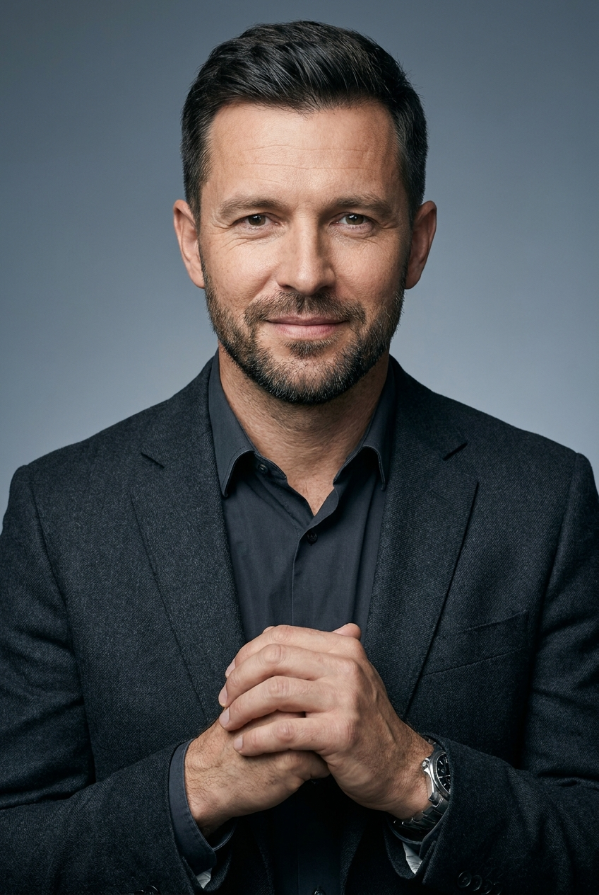
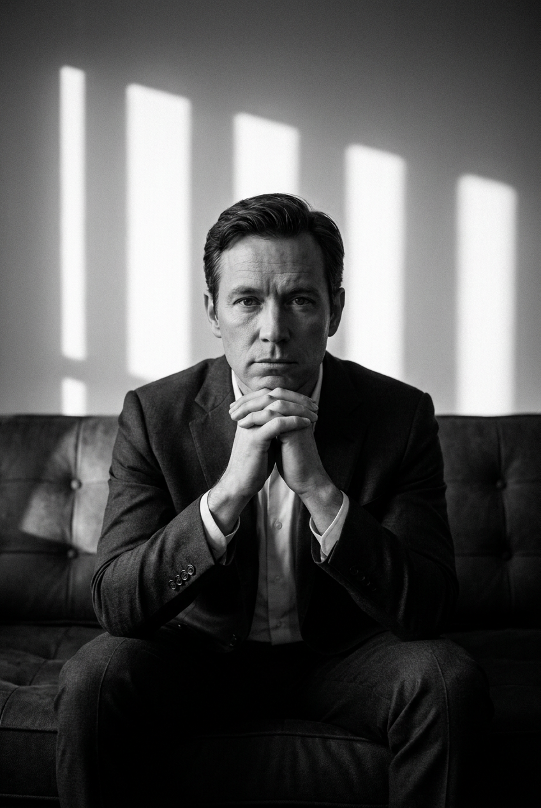
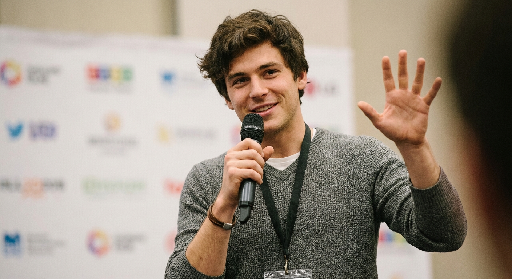
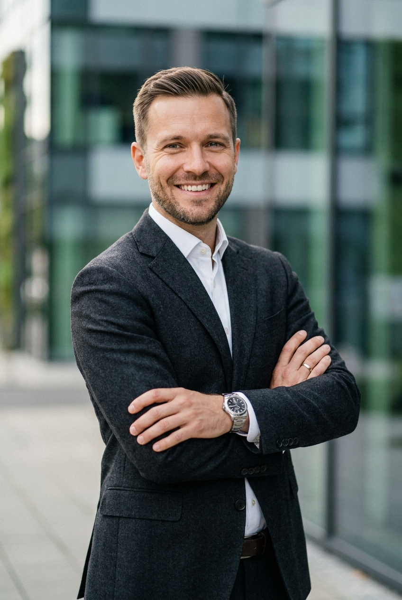
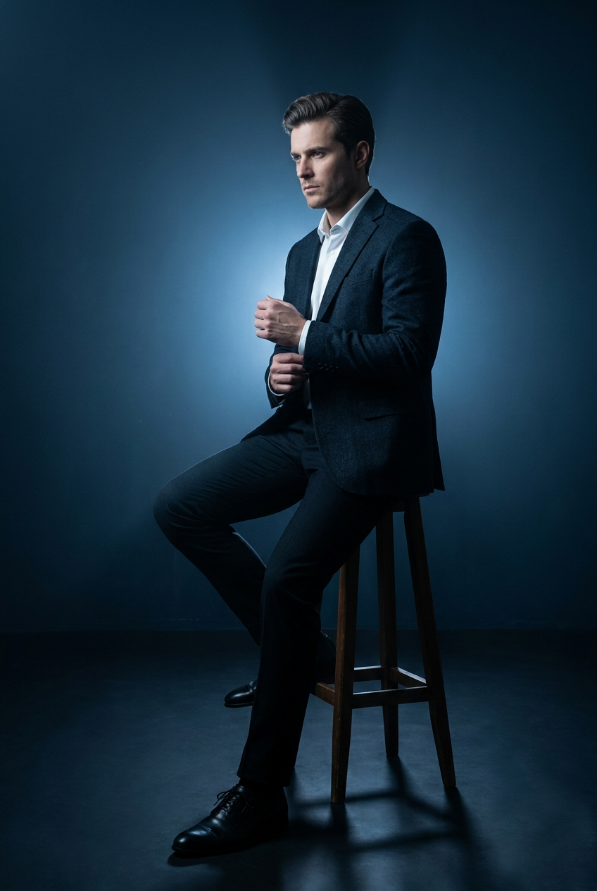
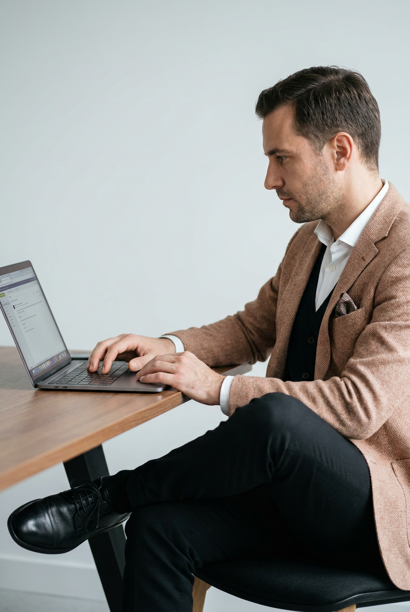
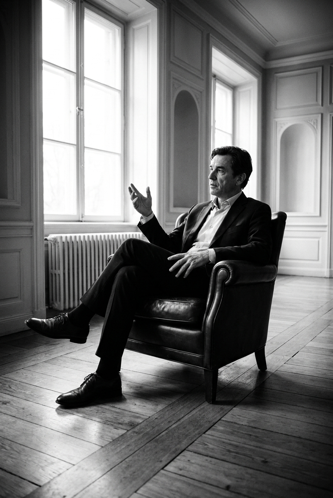
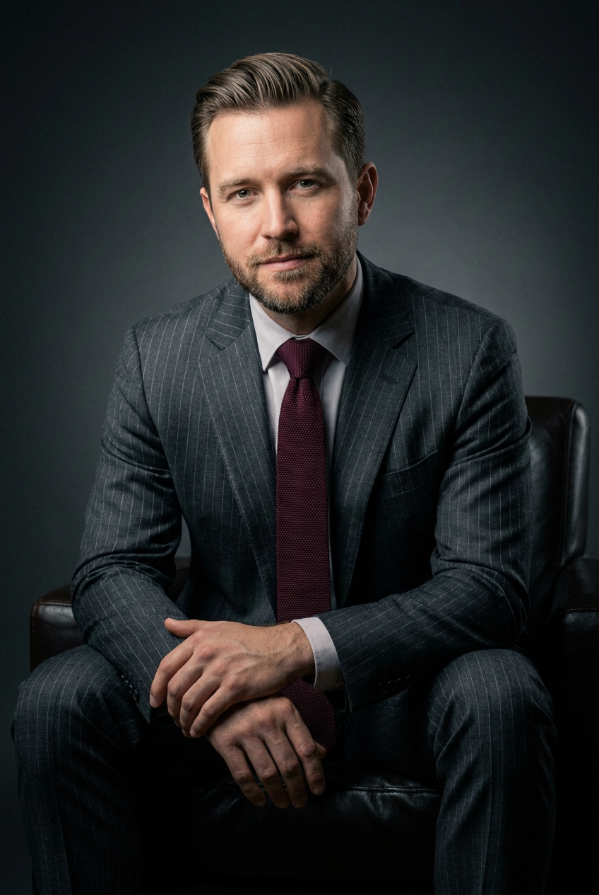
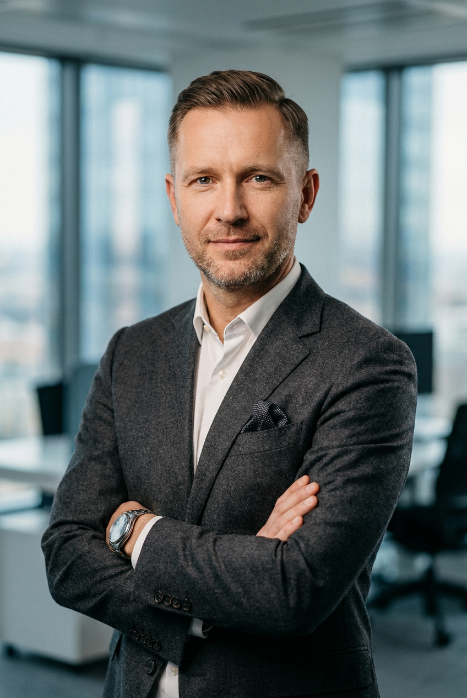
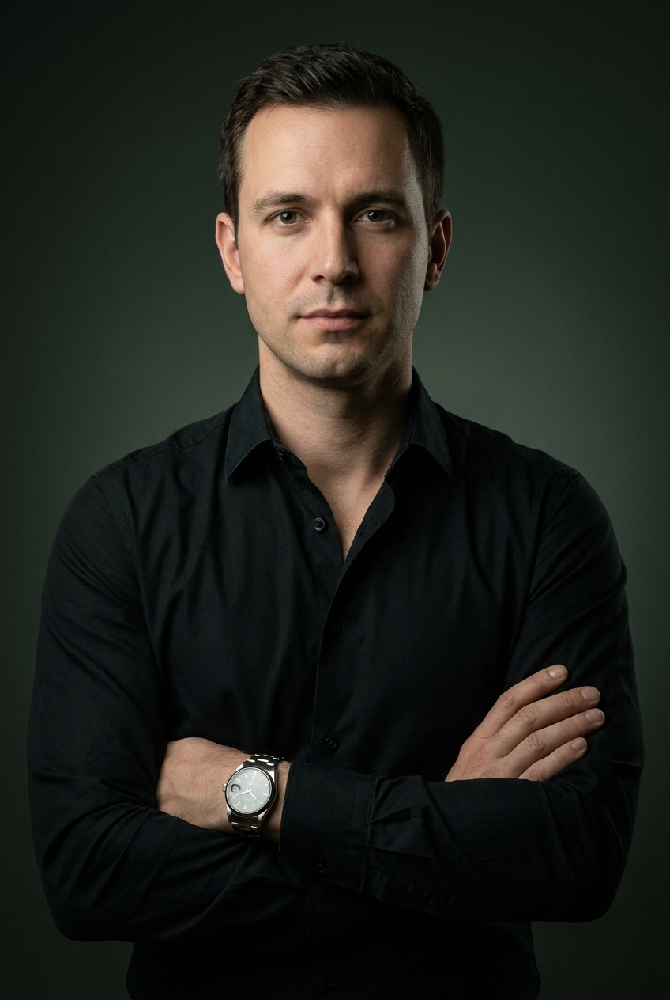

Мужская деловая ИИ-фотосессия: 10 промптов для нейросети

Хороший деловой портрет трудно снять с первого раза: мешают неподходящий свет, зажатая поза, случайный фон и одежда, которая теряется в кадре. Генерация помогает быстро получить несколько сценариев съёмки и выбрать образ для резюме, профиля, сайта или презентации.
В подборке — 10 промптов для мужской деловой фотосессии: от строгого headshot на однотонном фоне до снимков в офисе, на конференции и в драматичной студии. В каждом описании заданы композиция, свет, одежда, выражение лица, глубина резкости и детали окружения.
Как сгенерировать такое фото: пошагово
Нужен снимок анфас при ровном свете, лицо в кадре целиком, без тёмных очков и головных уборов. Разрешение от 1000 пикселей по короткой стороне. Чем чётче исходник, тем точнее модель повторит черты.
Выберите сценарий ниже и нажмите «Копировать» — текст уйдёт в буфер целиком, вместе с командой сохранения внешности. Эта команда стоит первой строкой и отвечает за то, чтобы на выходе было ваше лицо, а не случайное.
Кнопка «Сгенерировать» рядом с каждым промптом открывает модель в новой вкладке. Nano Banana Pro работает с референсом лица — в отличие от моделей, которые генерируют портрет с нуля и узнаваемость теряют.
Промпт — в поле ввода, портрет — через загрузку референса. Порядок значения не имеет, но без референса команда сохранения внешности работать не будет: модели нечего сохранять.
Для сторис и ленты берите 9:16, для превью и обложек — 4:3. Первый результат редко идеален: если поза или свет ушли не туда, поправьте соответствующую часть промпта и запустите заново. Обычно хватает двух-трёх итераций.
10 промптов для генерации
1. Классический студийный портрет
Строго сохранить внешность по загруженному референсу: черты лица, пропорции, мимику и текстуру кожи без изменений. Фотореалистичный студийный business portrait в спокойной классической эстетике, мягкий рассеянный свет, чистая профессиональная подача, без цифрового шума и артефактов. Вертикальная ориентация, композиция head-and-shoulders: в кадре голова и плечи, мужчина расположен строго по центру. Камера на уровне глаз, почти фронтальный ракурс с поворотом не более 5°, без искажённой перспективы. Фон полностью однотонный, серо-стальной градиент без предметов, надписей и логотипов. Аккуратная укладка, ухоженная короткая борода и усы, реалистичная кожа с естественной текстурой и лёгкими морщинами. Взгляд прямо в объектив, спокойная уверенность, мягкая натуральная улыбка без переигрывания. На мужчине графитовый или тёмно-серый пиджак из шерсти либо твила, хорошо различимы фактура ткани, лацканы и швы. Под ним тёмная рубашка глубокого серо-угольного оттенка с классическим воротником. Детализация лица и одежды высокая, пропорции естественные.
2. Чёрно-белый диванный noir

Строго сохранить внешность по загруженному референсу: черты лица, пропорции, мимику и текстуру кожи без изменений. Фотореалистичный чёрно-белый editorial-портрет с эстетикой high-contrast noir: глубокие тени, выразительный контраст, мягкая плёночная тональность, натуральная фактура кожи и ткани. Мужчина сидит на тёмном диване или кушетке с заметной стёжкой; на подлокотнике или спинке видны пуговицы либо кнопки. Вертикальный кадр, камера примерно на уровне груди, персонаж находится в центре. Диван уходит диагональю к краям изображения, добавляя перспективу. В тёмной студии позади расположена стена или экран со световыми прямоугольниками, похожими на тени от жалюзи или перфорации: четыре-пять вертикальных светлых полос и блоков. Мужчина ухожен, волосы аккуратно уложены, лицо с реалистичной текстурой кожи и серьёзным нейтральным выражением. Он смотрит прямо в объектив, спокойно и немного строго. Контрастный направленный свет подчёркивает скулы, ткань одежды и геометрию фона, но не превращает лицо в сплошную тень.
3. Спикер на деловой конференции

Строго сохранить внешность по загруженному референсу: черты лица, пропорции, мимику и текстуру кожи без изменений. Фотореалистичный репортажный кадр в стилистике event photography: молодой мужчина выступает на сцене или в зоне презентации на конференции. Средний план по грудь и плечи, камера на уровне лица, ракурс три четверти справа; персонаж занимает правую или центральную часть вертикального кадра. В одной руке он держит микрофон, другая поднята в дружелюбном жесте приветствия или как знак обращения к аудитории. На лице естественная улыбка, живая мимика, взгляд направлен немного вверх и в сторону камеры. Волосы объёмные, слегка растрёпанные, без чрезмерной идеальности. На мужчине серый вязаный или трикотажный свитер с V-образным либо круглым вырезом; под воротом частично виден белый слой одежды. На шее тёмный шнурок или лента. Фон сильно размыть малой глубиной резкости, создать мягкое боке. За спиной заметен пресс-стенд или баннер с логотипами, но весь текст и брендинг должны оставаться нечитабельными. Акцент на лице, микрофоне и поднятой руке, естественный свет конференционной площадки.
4. Улыбка у панорамных окон

Строго сохранить внешность по загруженному референсу: черты лица, пропорции, мимику и текстуру кожи без изменений. Фотореалистичный corporate headshot в формате lifestyle business: ухоженный мужчина стоит в офисной среде на фоне современного здания с панорамными окнами. Вертикальная композиция, камера на уровне груди или лица, мягкий дневной свет, кинематографичная цветокоррекция, сильное боке на заднем плане. Мужчина смотрит прямо в объектив и широко, доброжелательно улыбается. Волосы ровно уложены, короткая щетина или аккуратная бородка, глаза с естественными отражениями и чёткими контурами век. Кожа реалистичная, без пластикового сглаживания, лицо и шея анатомически пропорциональны. На нём тёмный чёрный или графитовый пиджак из матовой шерстяной ткани, видна фактура материала и аккуратные лацканы. Белая классическая рубашка с расправленным воротником. Пояс брюк виден частично, тёмный ремень без читаемого бренда. На запястье металлические часы без логотипа. Фон мягко размытый, офисные детали не отвлекают от лица.
5. Синий low-key на табурете

Строго сохранить внешность по загруженному референсу: черты лица, пропорции, мимику и текстуру кожи без изменений. Фотореалистичная студийная fashion-съёмка в стиле cinematic low-key. Тёмная студия, однотонный фон с переходом от глубокого чёрного к сине-голубому, драматичный тёмно-синий свет, лёгкая дымка в воздухе, высокий контраст и деликатная плёночная зернистость. Вокруг фигуры заметен мягкий световой ореол, на матовом тёмном полу лежат устойчивые тени. Вертикальный портрет. Ухоженный мужчина с аккуратно уложенными волосами и чёткими чертами лица сидит на высоком табурете с перекладиной. Он показан в профиль или полупрофиль, корпус развёрнут вправо, лицо видно в три четверти, выражение серьёзное, спокойное и уверенное. Ноги слегка согнуты: одна стопа твёрдо стоит на полу, другая лежит на опорной ноге крест-накрест. Одна рука опущена и поправляет край рукава, другая поднята в жесте, который нужно продолжить естественно, без напряжения. Сохранить реалистичную анатомию, фактуру одежды и мягкое отделение силуэта от фона.
6. Рабочий кадр с ноутбуком

Строго сохранить внешность по загруженному референсу: черты лица, пропорции, мимику и текстуру кожи без изменений. Фотореалистичный корпоративный lifestyle-портрет мужчины в современном офисе. Вертикальный кадр, камера на уровне сидящего человека, лёгкий полупрофиль с небольшим боковым смещением. Мужчина расположен справа или ближе к центру, на переднем плане слева стоят стол и открытый ноутбук; ноги и обувь хорошо различимы. Он смотрит на экран, выражение лица сосредоточенное и спокойное, мимика естественная, в глазах мягкие реалистичные блики. Фон — ровная светлая серо-белая стена без надписей, декора и случайных предметов. Средне-малая глубина резкости: мужчина и ноутбук остаются резкими, дальний фон слегка смягчён. На нём бежево-терракотовый или светло-коричневый пиджак из твида или рогожки с мелкой фактурой, структурированными плечами и аккуратными лацканами. Под пиджаком виден жилет или внутренний слой делового костюма, детали одежды выглядят натурально. Чистые цвета, мягкий дневной или студийный свет, высокая детализация кожи, ткани, ноутбука, обуви и рук без искажений.
7. Документальный портрет у окна

Строго сохранить внешность по загруженному референсу: черты лица, пропорции, мимику и текстуру кожи без изменений. Фотореалистичный чёрно-белый кинематографичный кадр в духе документальной студии и арт-фотографии. Высокий контраст, естественный дневной свет, лёгкая плёночная зернистость, мягкая виньетка. Вертикальная композиция с умеренно широкоугольной перспективой, без эффекта рыбьего глаза. Мужчина стоит или находится в светлой прохладной комнате с большими высокими окнами слева; окна разделены на несколько секций. На стенах белые и серые поверхности, архитектурные молдинги и ниши. В нижней части окна видны подоконник и радиатор с вертикальными секциями. Пол покрыт деревянными досками, различимы швы и фактура древесины. Справа на стене — аккуратный плинтус, панели или другие элементы отделки. Архитектурные линии окон, радиатора, пола и стен ровные, перспектива физически правдоподобная. Мужчина ухожен, лицо и волосы выглядят натурально, выражение спокойное и задумчивое. Взгляд направлен в сторону, не прямо в объектив. Тени мягкие, кожа не пересвечена, интерьер сохраняет документальную достоверность.
8. Полный костюм в кресле

Строго сохранить внешность по загруженному референсу: черты лица, пропорции, мимику и текстуру кожи без изменений. Фотореалистичный студийный business/editorial-портрет с тёмной low-key световой схемой, мягкими градиентами, высокой детализацией кожи и ткани, лёгкой плёночной фактурой. Фон чистый, однотонный, тёмно-серый или графитовый градиент, без предметов, текста и логотипов. Мужчина сидит в тёмном кожаном кресле с подлокотниками; матовая кожа, боковины и спинка хорошо различимы. Вертикальная композиция, персонаж по центру, в кадре видны ноги и обувь до колен или немного ниже. Корпус слегка развёрнут вправо, спина прямая, но расслабленная, поза уверенная и естественная. У мужчины аккуратная укладка с объёмом, короткая ухоженная щетина или борода. Выражение спокойное, взгляд направлен прямо в объектив или на 5–10° в сторону. На нём тёмно-серый костюм с тонкой полоской или мелкой фактурой, ткань и посадка выглядят реалистично. Свет мягко моделирует лицо, костюм и кресло, за головой и плечами сохраняется плавное отделение от фона.
9. Офисный портрет с городом

Строго сохранить внешность по загруженному референсу: черты лица, пропорции, мимику и текстуру кожи без изменений. Фотореалистичный корпоративный портрет в стилистике business headshot и lifestyle. Вертикальная ориентация, камера на уровне груди или плеч, мужчина находится на переднем плане в центре и слегка подаётся корпусом к объективу. Ракурс почти фронтальный, поворот корпуса небольшой — примерно 5–10°. Лицо и костюм максимально резкие, фон сильно размытый благодаря малой глубине резкости и мягкому боке. Позади расположены панорамные окна современного офиса, за ними угадываются размытые силуэты городских зданий; офисная мебель остаётся нечёткой. Цветовая гамма фона голубовато-серая, свет мягкий и естественный. Мужчина ухожен, волосы аккуратно уложены, лицо чистое или с минимальной щетиной. Выражение уверенное и спокойное, лёгкая нейтральная полуулыбка, взгляд прямо в объектив, в глазах натуральные блики. Кожа сохраняет поры и живую текстуру, без эффекта пластика. На нём тёмно-серый или антрацитовый костюм с реалистичной фактурой ткани, классическая рубашка и деловые детали без читаемых брендов. Сохранить естественные пропорции лица, шеи, плеч и рук.
10. Минималистичный зелёный фон

Строго сохранить внешность по загруженному референсу: черты лица, пропорции, мимику и текстуру кожи без изменений. Фотореалистичный студийный business headshot в тёмном минималистичном интерьере. Использовать низкоключевое освещение, умеренный cinematic-контраст, натуральную текстуру кожи и ткани, плавное падение светового градиента. Фон однотонный, тёмно-зелёный или графитовый, с мягкой заливкой и лёгкой тенью за головой и плечами; никаких предметов, надписей и логотипов. Вертикальный портретный формат, камера на уровне глаз, фронтальный ракурс. В центре — ухоженный мужчина с аккуратной укладкой, ровными естественными чертами и сдержанной мимикой. Выражение спокойное, уверенное, нейтральное; взгляд прямо в объектив, в глазах реалистичные блики. Не сглаживать кожу до пластиковой гладкости, сохранить тонкие детали лица. На мужчине чёрная рубашка без логотипов, матовая ткань с различимой фактурой, верхняя пуговица расстёгнута или ворот слегка открыт, видна часть шеи. Свет мягко очерчивает лицо, плечи и воротник, не создавая резких провалов в деталях. Реалистичная анатомия, аккуратная посадка одежды, чистая студийная картинка.
Что важно учесть в этом стиле
Деловой портрет держится на трёх параметрах: понятной роли героя, контролируемом свете и аккуратной одежде. Для профиля или резюме лучше работает камера на уровне глаз, спокойное выражение лица и фон без визуального мусора. Для личного бренда можно добавить офис, конференцию или ноутбук, но главный акцент всё равно должен оставаться на человеке.
Не перегружайте запрос противоречивыми указаниями. Если нужен строгий headshot, задайте кадр от груди или плеч. Если важен костюм целиком, отдельно пропишите нижнюю границу изображения, положение ног и обуви. Для реалистичного результата полезно указать фактуру шерсти, твида, кожи, дерева и стен, а также попросить нейросеть сохранить естественные пропорции лица и рук.
Идеи для вариаций
- Замените серо-стальной фон на тёплый бежевый, оливковый или глубокий бордовый.
- Добавьте очки в тонкой металлической оправе, кожаную папку или механические часы без брендинга.
- Попросите вариант с объективом 85 мм, диафрагмой f/2 и мягким размытием заднего плана.
- Сделайте серию для LinkedIn, сайта компании и презентации: крупный портрет, кадр по пояс и вертикальный снимок в полный рост.
- Для более живого образа замените прямой взгляд на лёгкий поворот головы к источнику света.
- Попробуйте чёрно-белую версию с умеренной зернистостью ISO 400 и мягкой виньеткой.
Как собрать свой промпт
Сначала укажите задачу и формат: например, «деловой портрет для страницы эксперта, вертикальный кадр 4:5». Затем задайте локацию, положение камеры, крупность плана и фон. После этого опишите героя: выражение лица, направление взгляда, волосы, щетину и одежду. Команду сохранения внешности в начале добавлять не нужно — её можно внести отдельно при использовании референса.
В финале пропишите свет, оптику и ограничения. Формулировка «85 мм, f/2, мягкий боковой свет, лицо и одежда в резкости, фон в боке» обычно точнее, чем общее «красивое профессиональное фото». Отдельно запретите лишний текст, логотипы, лишние пальцы, пластиковую кожу, кривые линии интерьера и неестественную анатомию. Для одной идеи полезно сделать 4–8 генераций, меняя только один параметр за попытку.
Ошибки, из-за которых кадр не получается
- Слишком общая сцена. Фраза «мужчина в офисе» не задаёт ни ракурс, ни свет, ни глубину резкости, поэтому результат может выглядеть случайным.
- Несовпадение крупности плана и одежды. Если просить headshot и одновременно показать обувь, нейросеть начнёт жертвовать деталями лица или костюма.
- Перегруженный фон. Много мебели, экранов и вывесок отвлекает от героя и повышает риск нечитаемых надписей.
- Слишком сильная улыбка. Для строгого делового образа лучше описывать лёгкую полуулыбку или спокойное выражение.
- Неуточнённый свет. Без направления и характера освещения лицо может стать плоским, пересвеченным или провалиться в тень.
- Отсутствие запретов. Добавьте ограничения на логотипы, артефакты, лишние пальцы, пластиковую кожу и искажённые пропорции.
Частые вопросы
Как сделать такое ИИ-фото бесплатно?
Для первых попыток подойдут Kandinsky и Шедеврум: они позволяют генерировать изображения по текстовому описанию, но бесплатные лимиты, скорость и доступные настройки могут меняться. В Krea AI и Arena.ai удобно сравнивать варианты и модели, однако часть функций может требовать регистрации или иметь ограничения по числу генераций. Работа с референсом зависит от конкретного режима: где-то можно загрузить исходное фото, а где-то доступна только генерация по тексту. Бесплатные инструменты часто хуже удерживают лицо, мелкие детали костюма и точную позу, поэтому для серии портретов понадобится несколько попыток.
Как сохранить сходство с человеком?
Загрузите качественный референс с ровным светом и открытым лицом, если выбранный сервис поддерживает такую функцию. В описании зафиксируйте возрастной диапазон, причёску, форму бороды, очки и характерные детали, но не перегружайте текст. Сделайте 4–8 вариантов, а затем меняйте только фон, одежду или свет. Для Nano Banana Pro и других моделей результат также зависит от качества исходной фотографии и точности режима работы с референсом.
Какой формат выбрать для делового профиля?
Для аватарки подойдёт вертикальный кадр 1:1 или 4:5 с планом от груди. Для сайта, статьи и презентации удобнее 4:5 или 2:3 — вокруг головы и плеч останется место для обрезки. Если изображение пойдёт в баннер, заранее задайте свободное пространство сбоку и попросите размер не ниже 2048 пикселей по длинной стороне.
Почему нейросеть искажает руки, часы или логотипы?
Мелкие детали и текст остаются сложными для генераторов, особенно в сценах с микрофоном, ноутбуком, ремнём и часами. Уберите из запроса реальные бренды, попросите нейтральные аксессуары без надписей и уменьшите число предметов в кадре. Если руки важны, задайте их положение отдельно и сгенерируйте несколько дублей. Логотипы лучше добавить позже в графическом редакторе, а не поручать их нейросети.